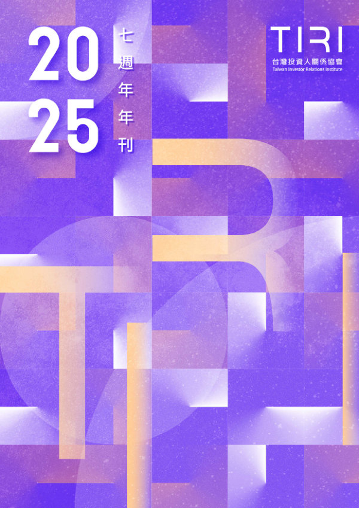
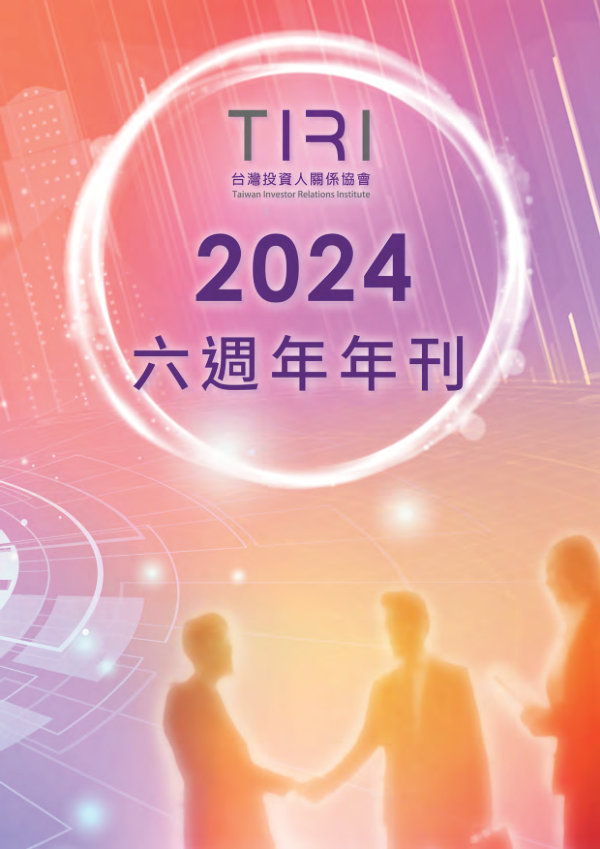
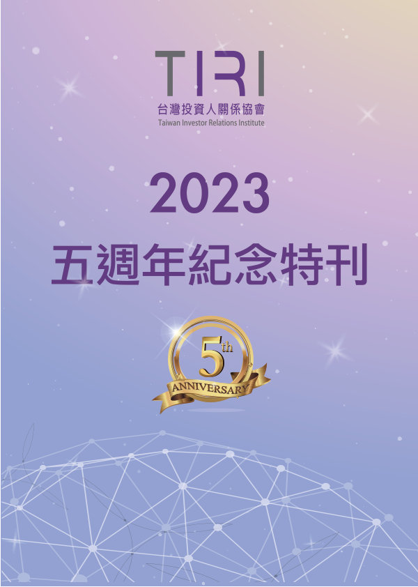

2025 · 繁體中文
IR Knowledge
證交所「證券服務雙月刊」專欄、NIRI IR Update 精選、專文與專訪──台灣 IR 的知識庫。
「IR Update 精選文章」由 NIRI 與 TIRI 於 2019–2020 合作，精選文章並中文化，透過 HKIRA 等合作夥伴同步揭露。
共 27 篇文章


沒有符合條件的文章，請調整關鍵字或清除篩選。

2025 · 繁體中文

2024 · 繁體中文

2023 · 繁體中文